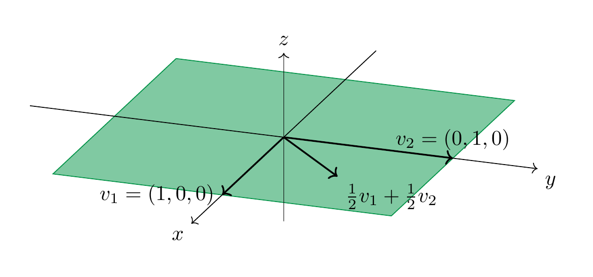

Linear combinations¶
In the sequel, \(V\) will always denote a vector space, for example \(V = {\bf R}^n\).
Definition 3.31 (Related exercises: Exercise 3.12, Exercise 3.10, Exercise 3.11, Exercise 3.19)
A linear combination of vectors \(v_1, \dots, v_m \in V\) is a vector of the form
where the \(a_1, \dots, a_m\) are arbitrary real numbers.
Example 3.32
If \(m = 1\) in the above definition, there is only one vector \(v := v_1\). A linear combination of a single vector \(v\) is therefore any vector of the form \(a v\), with an arbitrary \(a \in {\bf R}\). In other words it is an arbitrary scalar multiple of that vector.
Example 3.33
More interesting things start happening for two vectors and more. As an example, consider \(v_1 = (1, 0, 0)\) and \(v_2 = (0, 1, 0)\) in the vector space \({\bf R}^3\). Then \((3, 2, 0)\) is a linear combination of these since
On the other hand, \((0, 0, 1)\) is not a linear combination of \(v_1\) and \(v_2\): for arbitrary \(a_1, a_2 \in {\bf R}\), we compute
No matter how we choose \(a_1\) and \(a_2\), we always have
since the third components of these two vectors are always different. In fact, the linear combinations of \(v_1\) and \(v_2\) are precisely the vectors \((x, y, z)\) that satisfy \(z = 0\).

Given two vectors \(v_1, v_2 \in {\bf R}^3\), we will see later (Theorem 3.71) that there will always be some vector \(w \in {\bf R}^3\) (in fact infinitely many) that is not a linear combination of \(v_1\) and \(v_2\). In the above example any vector \(w = (x,y,z)\) with \(z \ne 0\) has that property. Continuing with that example, the \(x-y\)-plane inside \({\bf R}^3\), i.e., \(V := \{(x,y,z) \ | \ x, y \in {\bf R}, z = 0\} = \{(x,y,0) \ | \ x, y \in {\bf R} \}\) is a subspace of \({\bf R}^3\): it contains \((0,0,0)\) and given any two vectors \(v, w \in V\) we have \(v+w \in V\) and given \(r \in {\bf R}\), \(r v \in V\) (convince yourself this is true!). We can alternatively use Proposition 3.18 to see this is a subspace: \(V\) is the solution space of the equation \(z = 0\) (in the three variables \(x, y, z\)), which is a homogeneous linear equation. The following statement asserts that we always obtain a subspace in this manner.
Lemma 3.34 (Related exercises: Exercise 4.46, Exercise 3.14, Exercise 3.9, Exercise 3.16, Exercise 3.5)
Let \(V\) be a vector space and \(v_1, \dots, v_m \in V\) be any vectors. The set
of all linear combinations of \(v_1, \dots, v_m\) is a subspace of \(V\). It is called the span (or sometimes also the linear hull) of these vectors.
Proof. We check the three conditions in Definition 3.17. Let us abbreviate \(L := L(v_1, \dots, v_m)\).
-
The zero vector \(0 \in L\) since \(0 \cdot v_1 + \dots 0 \cdot v_m = 0 \cdot (v_1 + \dots + v_m) = 0\), using properties 4. and 8. in the definitions of a vector space.
-
Given two vectors \(w, u \in L\), we check \(w+u \in L\). Since \(w \in L\) there are some real numbers \(a_1, \dots, a_m\) such that \(w = a_1 v_1 + \dots + a_m v_m = \sum_{i=1}^m a_i v_i\). Likewise there are real numbers \(b_1, \dots, b_m\) with \(u = \sum_{i=1}^m b_i v_i\). This implies
- Given \(w \in L\) and \(r \in {\bf R}\), one checks similarly that \(rw \in L\) (, verify that!).
◻
Example 3.35
In Example 3.33, we have
Exercise 3.10 and Exercise 3.11 discuss linear combinations in the vector space \({\bf R}[x]^{\le 3}\). The span is closely related to another construction that produces new vector spaces out of given ones:
Definition 3.36 (Related exercises: Exercise 3.25, Exercise 3.26)
Let \(V\) be a vector space and \(A, B \subset V\) be two subspaces. The sum of \(A\) and \(B\) is defined as
I.e., it consists of all possible ways to sum an element in \(A\) and an element in \(B\). More generally, given subspaces \(A_1, \dots, A_n\) of \(V\), their sum is defined as
Lemma 3.37
The sum \(A+B\) is then again a subspace of \(V\).
The proof of this is very similar to the one of Lemma 3.34 and will be omitted.
Remark 3.38
Given some vectors \(v_1, \dots, v_n \in V\), we have
Indeed, both sets are precisely the vectors of the form \(a_1 v_1 + \dots + a_n v_n\) for arbitrary \(a_i \in {\bf R}\).
Remark 3.39
The sum is completely different from the union \(A \cup B\) of the two subspaces. We have seen in Example 3.13 that the union is (in general) not even a subspace (just a subset). We have
but these two subsets are distinct (unless \(A\) or \(B\) only consists of the zero vector). To see this inclusion, note that \(A \subset A + B\). Indeed, the zero vector \(0 \in B\) (since it is a subspace!), and for any \(v \in A\), we have \(v = v + 0 \in A + B\). Similarly, \(B \subset A + B\), and therefore \(A \cup B \subset A + B\).
Remark 3.40
The sum \(A+B\) is different from the direct sum \(A \oplus B\). This is already clear from the definition: while the sum makes use of the ambient vector space \(V\), the direct sum \(A \oplus B\) is insensitive to \(A\) and \(B\) both lying in \(V\). Also, it does not “see” to what extent \(A\) and \(B\) may overlap.
In a spirit similar to Question 3.21 we can ask the following question:
Question 3.41
Given two subspaces \(A, B \subset V\) of some larger vector space, how much “bigger” than \(A\) and \(B\) is the sum \(A + B\)?
It turns out that Question 3.21 are closely related. Loosely speaking, one can say that \(A + B\) “gets bigger” the same way as \(A \cap B\) “gets smaller”. To give a precise meaning to this one needs the concept of the dimension of a vector space. Understanding the dimension of a vector space requires combining two preliminary notions, that of a generating system and that of linear independence below (Definition 3.49).
Definition 3.42 (Related exercises: Exercise 3.24, Exercise 3.23)
A collection \(v_1, \dots, v_n\) of vectors is a generating system if
or, equivalently, if every vector \(w \in V\) is an appropriate linear combination of these vectors. We also say that these vectors span \(V\) if this is the case.
Example 3.43
The vectors \(e_1 := (1, 0, \dots, 0)\), \(e_2 = (0, 1, 0, \dots, 0)\) up to \(e_n = (0, \dots, 0, 1)\) are a generating system. Indeed, each vector \(x = (x_1, \dots, x_n) \in {\bf R}^n\) is a linear combination of these, namely
Example 3.44
We have observed in Example 3.33 that the vectors \(e_1 = (1, 0, 0)\) and \(e_2 = (0, 1, 0)\) in \({\bf R}^3\) are not a generating system since they only span the subspace
which is not the entire \({\bf R}^3\) (e.g., \((0,0,1)\) is missing).
The following example shows that three arbitrary vectors in \({\bf R}^3\) need not form a generating set.
Example 3.45
Consider the vectors \(v_1 := e_1 = (1, 0, 0)\), \(v_2 = (0, 1, 1)\) and \(v_3 = (2, 1, 1)\). These three vectors do not form a generating set of \({\bf R}^3\). In order to show this and to also understand which vectors are precisely in the span \(L(v_1, v_2, v_3)\), we consider the following equation, where \(w = (x, y, z) \in {\bf R}^3\) is a vector and \(a_1, a_2, a_3 \in {\bf R}\):
Those vectors \(w\) that can be written in such a form are in the span, those where no such equation holds are not in the span! This is an equation between two vectors in \({\bf R}^3\), i.e., ordered triples. Two such triples are the same precisely if their three components are the same. This leads to the following linear system:
In this system \(a_1, a_2, a_3\) are the variables, and \(x, y, z\) are parameters (on which the solutions of the system will depend). We form the matrix associated to this linear system, which is
We apply Gaussian elimination to that matrix, i.e., subtract the second row from the third:
We now distinguish two cases:
- \(z-y = 0\) (i.e., \(y=z\)): in this case the matrix is already in reduced row echelon form (Definition 2.27). The system has solutions, namely the variable \(a_3\) is a free variable, so its value be chosen arbitrarily. Then \(a_1\) and \(a_2\) are uniquely determined by \(a_3\) by the equations
which gives \(a_1 = x - 2a_3\) and \(a_2 = y - a_3\). Therefore, for arbitrary \(x, y \in {\bf R}\), the vectors
are in the span. They can be expressed as linear combinations
for an arbitrary \(a \in {\bf R}\) (this was the \(a_3\) before).
- \(z - y \ne 0\) (i.e., \(y \ne z\)). In this case, we can divide the last equation by \(z-y\), which gives the following reduced row-echelon matrix
According to Method 2.31, the system has no solution in this case. Thus, vectors of the form
are not in the span: \(w \notin L(v_1, v_2, v_3)\).
The following method gives a criterion to check whether a given set of vectors generates \({\bf R}^n\). We will prove this statement later (Theorem 4.81).
Method 3.46 (Related exercises: Exercise 4.15, Exercise 3.25)
Let \(v_1, \dots, v_m \in {\bf R}^n\) be some vectors. Form the matrix
(i.e., each the \(i\)-th row of \(A\) is precisely the vector \(v_i\), so that \(A = (v_{ij})\) if \(v_i = (v_{i1}, \dots, v_{in})\).) Bring this matrix into row-echelon form by Gaussian elimination (Method 2.29). Call this resulting matrix \(B\). If \(B\) contains \(n\) leading ones, then \(v_1, \dots, v_m\) span \({\bf R}^n\). Otherwise, they don’t span \({\bf R}^n\).
Corollary 3.47
Fewer than \(n\) vectors can never span \({\bf R}^n\) (since in any event \(B\) can at most contain \(m\) leading ones).